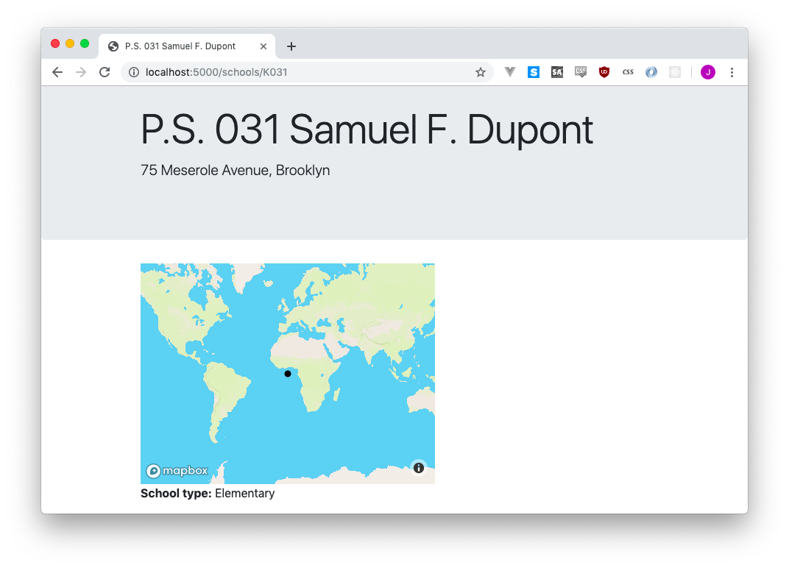
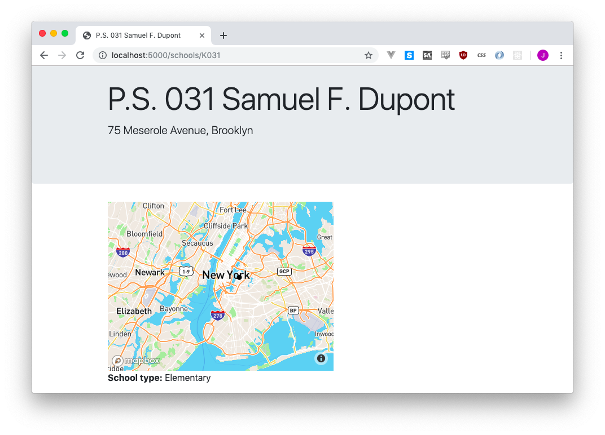

8 Mapping our schools
We’re going to map our schools with MapBox GL. Once upon a time we would have used Leaflet, but the world has since moved on to newer and (arguably) better things.
8.1 Adding MapBox to our pages
8.1.1 Adding MapBox CSS and JS
MapBox uses special CSS and JavaScript to work. Since we aren’t sure which pages we’ll be using it on, we might as well just add it to our universal layout.
Edit the <head> section of layout.html to match this:
<head>
<title>{{ self.headline() }}</title>
<link rel="stylesheet" href="https://stackpath.bootstrapcdn.com/bootstrap/4.3.1/css/bootstrap.min.css" crossorigin="anonymous">
<script src='https://api.tiles.mapbox.com/mapbox-gl-js/v1.0.0/mapbox-gl.js'></script>
<link href='https://api.tiles.mapbox.com/mapbox-gl-js/v1.0.0/mapbox-gl.css' rel='stylesheet' />
</head>Now every single page will be able to use the ultimate magic power of MapBox!
8.1.2 Adding a basic (and fake) map
Now we’ll open up detail.html and add the sample MapBox map from their documentation in the content block.
{% block content %}
<div class="container">
<div id='map' style='width: 400px; height: 300px;'></div>
<script>
mapboxgl.accessToken = 'pk.eyJ1IjoianNvbWEiLCJhIjoibFJmYl9JWSJ9.AUm8d76cbOvVEn2mMeG_ZA';
var map = new mapboxgl.Map({
container: 'map',
style: 'mapbox://styles/mapbox/streets-v9'
});
map.on('load', function() {
var geojsonData = {
"type": "FeatureCollection",
"features": [{
"type": "Feature",
"geometry": {
"type": "Point",
"coordinates": [0, 0]
}
}]
};
map.addLayer({
"id": "points",
"type": "circle",
"source": {
"type": "geojson",
"data": geojsonData
}
})
})
</script>
<p><strong>School type:</strong> {{ school.SCH_TYPE }}</p>
<p></p>
<p></p>
</div>
{% endblock %}Refresh the page and YOU HAVE A MAP!

A terrible, horrible map, with a circle in no meaningful position, but a map regardless. Let’s look at what each part of this new code does.
<div id='map' style='width: 400px; height: 300px;'></div>This code makes an empty box on your page. An <h1> is a headline and a <p> is a paragraph, but a <div> doesn’t really mean anything. This is going to be eventually filled up with your map. Right now it’s being set to 400 pixels wide and 300 pixels tall.
mapboxgl.accessToken = 'pk.eyJ1IjoianNvbWEiLCJhIjoibFJmYl9JWSJ9.AUm8d76cbOvVEn2mMeG_ZA';
var map = new mapboxgl.Map({
container: 'map',
style: 'mapbox://styles/mapbox/streets-v9'
});This is where we initialize MapBox GL.
In order to display the background of your map - called the basemap, you need to tell MapBox who you are (if you use a LOT of pageviews, they’ll start charging you). That’s what mapboxgl.accessToken is doing. We’re using the access token from their demo, so it shouldn’t be a problem.
The next few lines are setting up the map <div> that we made a little earlier, and telling MapBox what style we want the background map to be.
We then use map.on('load')... to wait for the map to load. Once it’s ready we start to assemble our data.
var geojsonData = {
"type": "FeatureCollection",
"features": [{
"type": "Feature",
"geometry": {
"type": "Point",
"coordinates": [0, 0]
}
}]
};MapBox GL uses a data format called GeoJSON to keep track of points, lines, shapes and such. You can play around with it at geojson.io, but the basic idea is that a single point or line or shape or watever is called a Feature and a bunch of features is called a FeatureCollection. In this case we have exactly one feature, and it’s a Point with coordinates at a latitude and longitude of [0, 0].
Next up we need to actually give that data to our map so it can draw the point.
map.addLayer({
"id": "points",
"type": "circle",
"source": {
"type": "geojson",
"data": geojsonData
}
})We’re using addLayer to attach our geojsonData to our map. You can tell all sorts of stuff to your map, from styling and interaction, but we’re just saying “hey, this is a bunch of circles, draw some circles.” Not very exciting, but it gets the job done.
8.1.3 Inserting our data into the map
The map is drawing a circle in the middle of the ocean because of these lines here:
"geometry": {
"type": "Point",
"coordinates": [0, 0]
}The point says it’s at [0, 0], and so the map draws it there. If we adjust the first number a little bit, we’ll see it jump to the right!
"geometry": {
"type": "Point",
"coordinates": [30, 0]
}All we need to do is put the latitude and longitude of the school into those coordinates, and we’ll be all set! The confusing thing about this is that while this code is definitely JavaScript, we get to treat it just like HTML or anything else we’ve been using {{ }} with.
Since our school has a longitude column and a latitude column, we can pop them right into the coordinates, and the circle will move right on along with them:
"geometry": {
"type": "Point",
"coordinates": [{{ school.longitude }}, {{ school.latitude }}]
}If you view the source of the page, you can see how the longitude and latitude of your school just got dropped in.
"geometry": {
"type": "Point",
"coordinates": [-73.95471, 40.726437]
}You didn’t have to do any JavaScript coding, you just said “hey, Jinja2 template, insert the Python variable’s coordinates exacty where I tell you.” It’s kind of weird to be using Python variables on an HTML page in a JavaScript section but hey, if it works it works!
8.1.4 Zooming and centering
If we visited a few dozen of our school pages, we’d notice they all seem to be in the same place. That’s because we’re zoomed way out in the middle of nowhere!
Let’s start by centering our map on New York City. Its coordinates are roughly , so when we start up the map we can tell it exactly were to be. We’ll also zoom in a bit, just to frame the bounds of city nicely.
mapboxgl.accessToken = 'pk.eyJ1IjoianNvbWEiLCJhIjoibFJmYl9JWSJ9.AUm8d76cbOvVEn2mMeG_ZA';
var map = new mapboxgl.Map({
container: 'map',
style: 'mapbox://styles/mapbox/streets-v9',
center: [-74, 40.71],
zoom: 9
});
Be sure to add a
,at the end of thestyle:line, or JavaScript will get unhappy and break!
8.1.5 Adjusting the style of our dot
Now that we’re zoomed in a bit I’m a little less happy with our black dot - it doesn’t stand out as well as I thought! If we want to play around with the style of the circle, we’ll do it by adding a paint option to our addLayer call:
map.addLayer({
"id": "points",
"type": "circle",
"source": {
"type": "geojson",
"data": geojsonData
},
"paint": {
"circle-radius": 5,
"circle-color": "#ECCB2F",
"circle-stroke-width": 1,
"circle-stroke-color": "black"
}
})I set the circle radius to be a bit larger, gave it a fill color (using an HTML color code) and a little stroke (aka border) to make the circle stand out a bit more.
If we’re still not satisfied, we can play around with the style of the background - it’s easier to stand out if you’re on something lighter, right? To make this happen, you can adjust the initial map call to start with a different style.
mapboxgl.accessToken = 'pk.eyJ1IjoianNvbWEiLCJhIjoibFJmYl9JWSJ9.AUm8d76cbOvVEn2mMeG_ZA';
var map = new mapboxgl.Map({
container: 'map',
style: 'mapbox://styles/mapbox/light-v10',
center: [-74, 40.71],
zoom: 9
});